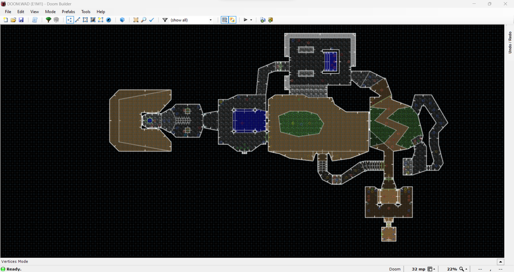

Terrain greatly influences any battle. Being forced to have the low ground makes any engagement more difficult. Likewise, having
the high ground can make a battle easier. It's all about being able to digest and comprehend the enemies ahead of you and where to go
to decrease your chances of dying.
DoomBuilder shenanigans, with tips and a link to the DoomBuildier website.
Will go over basic map creation and fundamentals in level design.

Then, it will go over style and special looks for your maps.
It will also show verticality in doom maps.